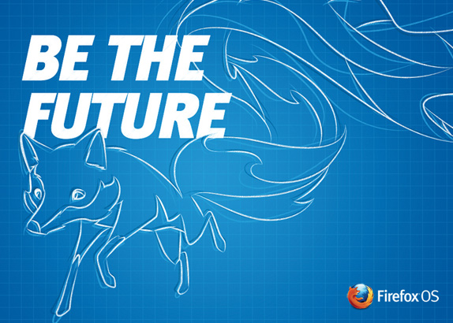

韓國樂金公司 (LG) 發表新款 Firefox OS 智慧型手機 ─ LG Fireweb
【美商謀智新聞稿】Mozilla 是全球性的非營利組織，以推動網路的平等、自由、開放為宗旨。很高興宣佈其合作夥伴 Telefónica 今日公開表示 Vivo 將於巴西境內開始銷售全新 LG Fireweb 與 Alcatel One Touch Fire 共 2 款 Firefox OS 智慧型手機。Telefónica 另同時宣佈，近期內將於祕魯、墨西哥、烏拉圭推出 Firefox OS 手機。
Firefox OS 智慧型手機是首款完全以 Web 技術打造的裝置，帶給你美觀、簡潔、直覺、簡單易用的絕妙體驗，並同時兼顧效能、價格、個人化等所有考量。

由 Telefónica 發佈的新聞中首次介紹由韓國樂金公司 (LG) 發表的 Firefox OS 手機 ─ LG Fireweb。LG Fireweb 搭載 4 吋螢幕與 5 百萬畫素相機，同時內建Facebook 功能整合、《Cut the Rope》遊戲，以及新的方式來協助使用者發掘更多 App。
Firefox OS 除了具備智慧型手機的基本功能之外，另內建 Facebook 與 Twitter 社交功能、可離線使用的 Nokia HERE 地圖，當然也少不了高人氣的 Firefox 瀏覽器、Firefox Marketplace 以及更多特色，可滿足消費者的多樣需求。
Firefox OS 對智慧型手機作出全新詮釋 ─ 隨使用者情境調適的 App 搜尋功能就是要跟著你轉變而隨時滿足你的需求。只要輸入感興趣的關鍵字，即可獲得全新的自訂手機體驗。你可選擇一次性使用或永久下載的 App，讓你隨時擁有所需內容並客製自己的使用經驗。
使用者也可到 Firefox Marketplace 尋找更多 App。Marketplace 現提供全球熱門的 App，如 Badoo、Box、Facebook、KAYAK、SoundCloud、The Weather Channel、TimeOut、TMZ、Tuenti、Twitter，及美商藝電 (EA) 的《Poppit》遊戲等。
除了全球知名 App 以外，Firefox Marketplace 更注重在地經驗的提供，具備超過 50 款巴西國內的相關 App，包含 UOL、BOL、SporTV、Dieta e Saúde、Editora Globo、Galinha Pintadinha、Kekanto、Vivo my App、Vivo Chat，還有更多。
新款 Firefox OS 手機如今搭載最新的 Firefox OS 1.1版本，除了提升多項功能之外，更具備如多媒體簡訊 (MMS) 等的新功能。現在已是 Firefox OS 的使用者，也很快就能將手上的裝置升級為最新版本。
Firefox OS 是 Firefox 桌面與行動瀏覽經驗於行動裝置上的延伸。Firefox 在全球擁有數億名愛好者。使用者可在 Firefox OS 上獲得與 Firefox 瀏覽器完全相同的體驗：安全性、隱私性、自訂性，讓使用者擁有掌控權，如同 Firefox 一直以來對使用者的承諾。
Mozilla 在全球與超過20 家硬體廠商與電信營運商合作， 共同打造 Firefox OS 使其成為更親民的智慧型手機，提供給初次使用智慧型手機的使用者全新的行動 Web 體驗。根據 Kleiner Perkins Caufield & Byers 風險投資公司的報告指出，全球僅 21% 的行動用戶擁有智慧型手機。
目前行動市場主要的作業系統由大型跨國企業所掌握，針對此狀況，Telefónica Vivo 總裁 Antonio Carlos Valente 相信 Firefox OS 將成為智慧型手機市場的另一項新選擇。他表示：「我們希望能透過更親民的價格，為消費者提供全新的使用經驗，而 Firefox OS 系統的功能及其後續發展，將由龐大的 Firefox OS 開發者社群所決定；而不是操控在特定公司的手中。」
Mozilla 首席營運長 Jay Sullivan 強調：「我們同樣秉持 Mozilla 的使命而建構出 Firefox OS，要將 Web 的力量交付給所有人使用，並致力提供最佳的 Web 經驗。我們很高興再次看到 Firefox OS 獲得合作夥伴的肯定，並於新市場中發表新款裝置，而全球開發者也受到啟發而持續創新。Mozilla 與 Telefónica Vivo 的合作關係，將藉由優雅的 LG 新裝置搭配最佳的全球性與地區性內容，進而讓 Firefox OS 提供嶄新且豐富的使用體驗。」
更多資訊：
原文鏈結：https://blog.mozilla.org/blog/2013/10/22/telefonica-vivo-launches-firefox-os-smartphones-in-brazil/